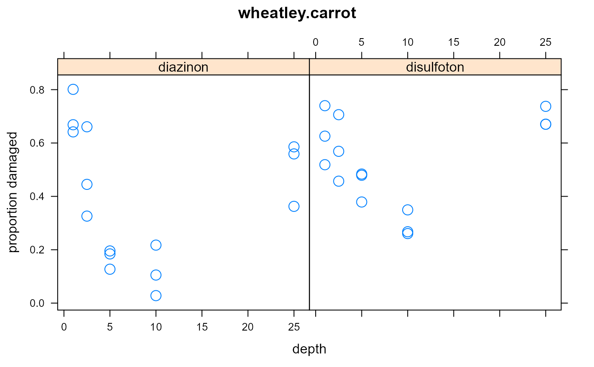

wheatley.carrot.RdInsecticide treatments for carrot fly larvae. Two insecticides with five depths.
data("wheatley.carrot")
A data frame with 36 observations on the following 6 variables.
treatmenttreatment factor, 11 levels
insecticideinsecticide factor
depthdepth
repblock
damagednumber of damaged plants
totaltotal number of plants
In 1964 an experiment was conducted with microplots to evaluate the effectiveness of treatments against carrot fly larvae. The treatment factor is a combination of insecticide and depth.
Hardin & Hilbe used this data to fit a generalized binomial model.
Famoye (1995) used the same data to fit a generalized binomial regression model. Results for Famoye are not shown.
G A Wheatley & H Freeman. (1982). A method of using the proportions of undamaged carrots or parsnips to estimate the relative population densities of carrot fly (Psila rosae) larvae, and its practical applications. Annals of Applied Biology, 100, 229-244. Table 2.
http://doi.org/10.1111/j.1744-7348.1982.tb01935.x
James William Hardin, Joseph M. Hilbe. Generalized Linear Models and Extensions, 2nd ed.
F Famoye (1995). Generalized Binomial Regression. Biom J, 37, 581-594.
library(agridat) data(wheatley.carrot) dat <- wheatley.carrot # Observed proportions of damage dat <- transform(dat, prop=damaged/total) libs(lattice) xyplot(prop~depth|insecticide, data=dat, subset=treatment!="T11", cex=1.5, main="wheatley.carrot", ylab="proportion damaged")# Model for Wheatley. Deviance for treatment matches Wheatley, but other # deviances do not. Why? # treatment:rep is the residual m1 <- glm(cbind(damaged,total-damaged) ~ rep + treatment + treatment:rep, data=dat, family=binomial("cloglog")) anova(m1)#> Analysis of Deviance Table #> #> Model: binomial, link: cloglog #> #> Response: cbind(damaged, total - damaged) #> #> Terms added sequentially (first to last) #> #> #> Df Deviance Resid. Df Resid. Dev #> NULL 35 1824.41 #> rep 2 64.69 33 1759.73 #> treatment 10 1636.16 23 123.56 #> rep:treatment 20 108.69 3 14.88# GLM of Hardin & Hilbe p. 161. By default, R uses T01 as the base, # but Hardin uses T11. Results match. m2 <- glm(cbind(damaged,total-damaged) ~ rep + C(treatment, base=11), data=dat, family=binomial("cloglog")) summary(m2)#> #> Call: #> glm(formula = cbind(damaged, total - damaged) ~ rep + C(treatment, #> base = 11), family = binomial("cloglog"), data = dat) #> #> Deviance Residuals: #> Min 1Q Median 3Q Max #> -3.4888 -1.4974 -0.2190 0.8434 3.8726 #> #> Coefficients: #> Estimate Std. Error z value Pr(>|z|) #> (Intercept) 0.52335 0.04668 11.212 < 2e-16 *** #> repR2 0.33307 0.04528 7.356 1.9e-13 *** #> repR3 0.37659 0.04527 8.319 < 2e-16 *** #> C(treatment, base = 11)1 -0.56727 0.06696 -8.471 < 2e-16 *** #> C(treatment, base = 11)2 -1.20193 0.07448 -16.138 < 2e-16 *** #> C(treatment, base = 11)3 -2.46298 0.11231 -21.931 < 2e-16 *** #> C(treatment, base = 11)4 -2.84076 0.13190 -21.538 < 2e-16 *** #> C(treatment, base = 11)5 -1.11758 0.07293 -15.323 < 2e-16 *** #> C(treatment, base = 11)6 -0.77311 0.06910 -11.188 < 2e-16 *** #> C(treatment, base = 11)7 -0.89890 0.07009 -12.825 < 2e-16 *** #> C(treatment, base = 11)8 -1.28975 0.07503 -17.189 < 2e-16 *** #> C(treatment, base = 11)9 -1.83174 0.08787 -20.846 < 2e-16 *** #> C(treatment, base = 11)10 -0.61234 0.06772 -9.043 < 2e-16 *** #> --- #> Signif. codes: 0 '***' 0.001 '**' 0.01 '*' 0.05 '.' 0.1 ' ' 1 #> #> (Dispersion parameter for binomial family taken to be 1) #> #> Null deviance: 1824.41 on 35 degrees of freedom #> Residual deviance: 123.56 on 23 degrees of freedom #> AIC: 339.51 #> #> Number of Fisher Scoring iterations: 5 #>